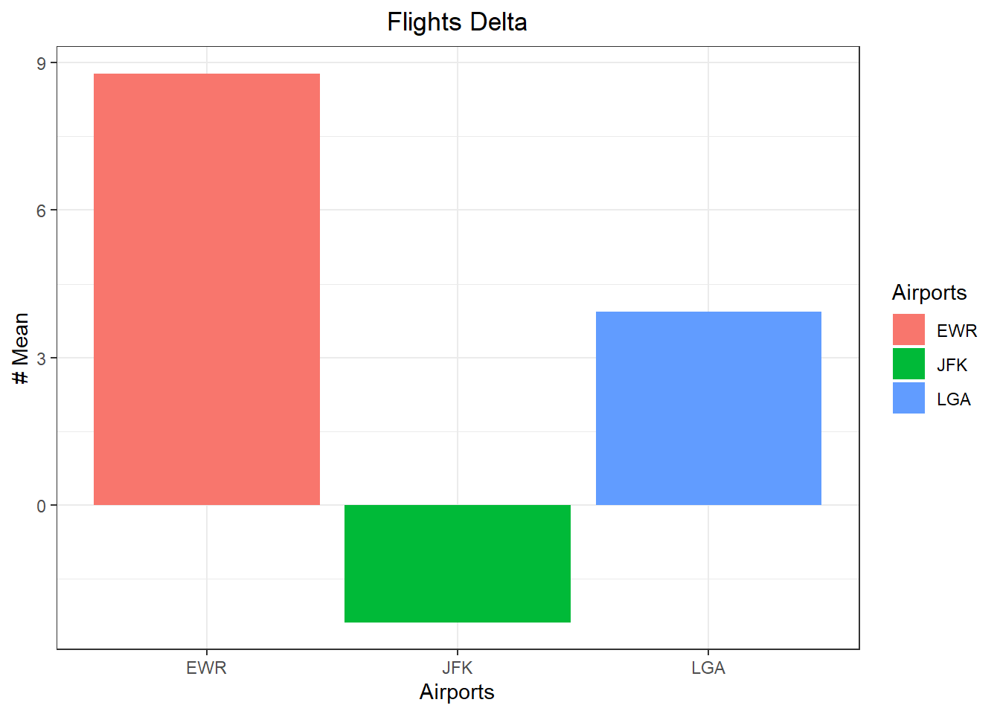
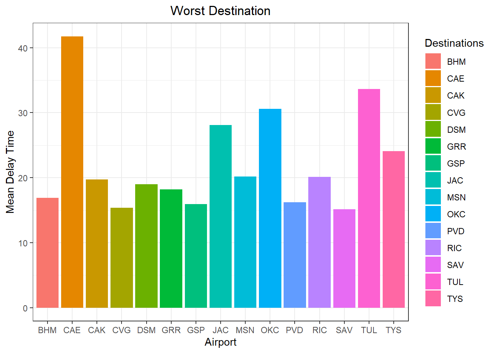

Code
# library tidyverse and nycflights13 installed
library(tidyverse)
library(nycflights13)
#install.packages('nycflights13')You just started your internship at a big firm in New York, and your manager gave you an extensive file of flights that departed JFK, LGA, or EWR in 2013. From this data (which you can obtain in R) your manager wants you to answer some specific questions.
# library tidyverse and nycflights13 installed
library(tidyverse)
library(nycflights13)
#install.packages('nycflights13')# A tibble: 5 × 19
year month day dep_time sched_dep_time dep_delay arr_time sched_arr_time
<int> <int> <int> <int> <int> <dbl> <int> <int>
1 2013 1 1 517 515 2 830 819
2 2013 1 1 533 529 4 850 830
3 2013 1 1 542 540 2 923 850
4 2013 1 1 544 545 -1 1004 1022
5 2013 1 1 554 600 -6 812 837
# ℹ 11 more variables: arr_delay <dbl>, carrier <chr>, flight <int>,
# tailnum <chr>, origin <chr>, dest <chr>, air_time <dbl>, distance <dbl>,
# hour <dbl>, minute <dbl>, time_hour <dttm>tibble [336,776 × 19] (S3: tbl_df/tbl/data.frame)
$ year : int [1:336776] 2013 2013 2013 2013 2013 2013 2013 2013 2013 2013 ...
$ month : int [1:336776] 1 1 1 1 1 1 1 1 1 1 ...
$ day : int [1:336776] 1 1 1 1 1 1 1 1 1 1 ...
$ dep_time : int [1:336776] 517 533 542 544 554 554 555 557 557 558 ...
$ sched_dep_time: int [1:336776] 515 529 540 545 600 558 600 600 600 600 ...
$ dep_delay : num [1:336776] 2 4 2 -1 -6 -4 -5 -3 -3 -2 ...
$ arr_time : int [1:336776] 830 850 923 1004 812 740 913 709 838 753 ...
$ sched_arr_time: int [1:336776] 819 830 850 1022 837 728 854 723 846 745 ...
$ arr_delay : num [1:336776] 11 20 33 -18 -25 12 19 -14 -8 8 ...
$ carrier : chr [1:336776] "UA" "UA" "AA" "B6" ...
$ flight : int [1:336776] 1545 1714 1141 725 461 1696 507 5708 79 301 ...
$ tailnum : chr [1:336776] "N14228" "N24211" "N619AA" "N804JB" ...
$ origin : chr [1:336776] "EWR" "LGA" "JFK" "JFK" ...
$ dest : chr [1:336776] "IAH" "IAH" "MIA" "BQN" ...
$ air_time : num [1:336776] 227 227 160 183 116 150 158 53 140 138 ...
$ distance : num [1:336776] 1400 1416 1089 1576 762 ...
$ hour : num [1:336776] 5 5 5 5 6 5 6 6 6 6 ...
$ minute : num [1:336776] 15 29 40 45 0 58 0 0 0 0 ...
$ time_hour : POSIXct[1:336776], format: "2013-01-01 05:00:00" "2013-01-01 05:00:00" ...Answer: US, EV and US, are located in the lowest 75% accordingly to the graph.
# A tibble: 135,645 × 19
year month day dep_time sched_dep_time dep_delay arr_time sched_arr_time
<int> <int> <int> <int> <int> <dbl> <int> <int>
1 2013 1 1 517 515 2 830 819
2 2013 1 1 533 529 4 850 830
3 2013 1 1 542 540 2 923 850
4 2013 1 1 544 545 -1 1004 1022
5 2013 1 1 554 600 -6 812 837
6 2013 1 1 554 558 -4 740 728
7 2013 1 1 555 600 -5 913 854
8 2013 1 1 557 600 -3 709 723
9 2013 1 1 557 600 -3 838 846
10 2013 1 1 558 600 -2 753 745
# ℹ 135,635 more rows
# ℹ 11 more variables: arr_delay <dbl>, carrier <chr>, flight <int>,
# tailnum <chr>, origin <chr>, dest <chr>, air_time <dbl>, distance <dbl>,
# hour <dbl>, minute <dbl>, time_hour <dttm>
Answer: Delta Airlines only have 3 airports of origin and JFK is the one with less late arrival determined by the average.
# A tibble: 3 × 2
origin arrival_mean
<chr> <dbl>
1 EWR 8.78
2 JFK -2.38
3 LGA 3.93
Answer: the worst destination airport in terms of arrival delays is CAE. I used a >15 mean value to describe worst.
# A tibble: 15 × 2
dest arrival_mean
<chr> <dbl>
1 CAE 41.8
2 TUL 33.7
3 OKC 30.6
4 JAC 28.1
5 TYS 24.1
6 MSN 20.2
7 RIC 20.1
8 CAK 19.7
9 DSM 19.0
10 GRR 18.2
11 BHM 16.9
12 PVD 16.2
13 GSP 15.9
14 CVG 15.4
15 SAV 15.1
Disaggregated data by each airport (showing complexity of data)
ggplot(df1, mapping = aes(x=factor(origin), y= dep_delay))+
geom_dotplot(aes(fill=origin,color=origin),binaxis = "y", binwidth = 0.2,dotsize = 0.5)+
theme(panel.grid.major = element_blank())+
labs(title = "Airport Delays", x = "Airport", y="Departure Delay")+
theme(plot.title = element_text(hjust = 0.5))